Search buses
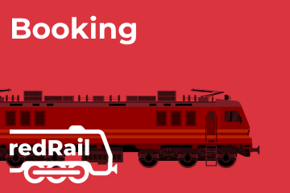
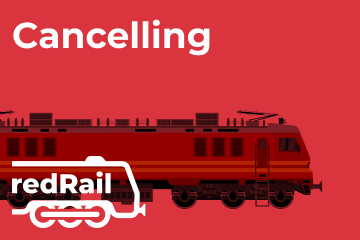
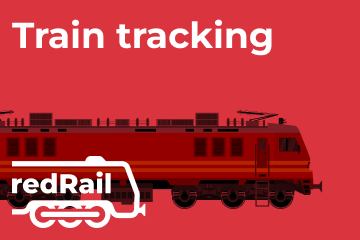
In the past, if you wanted to book train tickets, you had to physically visit ticket reservation centres and
stand in long queues for hours. However, due to rising technology advancements, you can book IRCTC train
tickets online from your home. redRail is an online train ticket booking platform that allows you to get
tickets in just a few minutes.
Utilising the super-convenient and user-friendly interface of redRail, you only need to enter the origin
station, destination station, and travel date details. Instantly, the platform will display the list of
available trains of your chosen route and travel date. As an authorised train ticket booking platform by
IRCTC, redRail ensures the authenticity of your bookings.
You can book train tickets from redRail in just 5 steps. Here's how to book and pay for a rail ticket online.
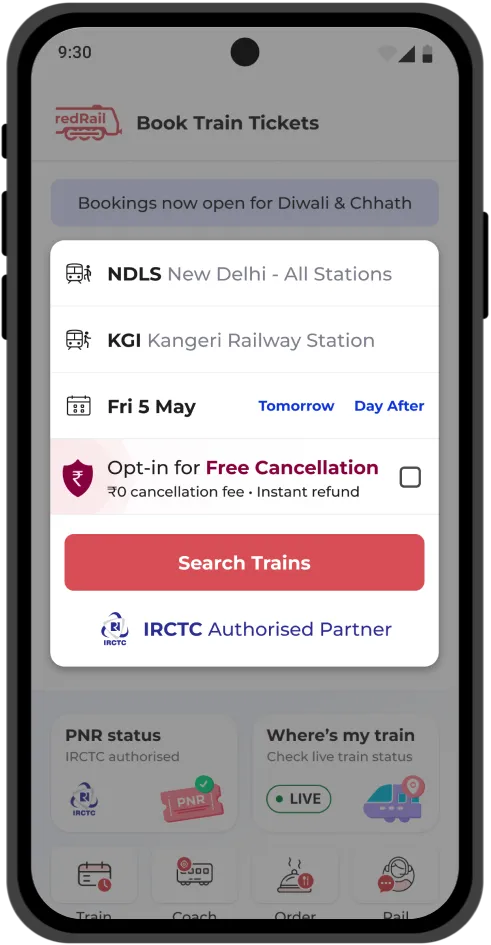
For booking a train ticket, you need first to visit the redRail platform. On the website, you can choose the date of your journey, as well as the boarding and destination stations. Then, click on 'Search trains' to proceed with the booking.
In the next step of rail ticket booking, you will need to select the class. You can choose first class, second or third AC, or sleeper. You can check the categories available and then choose the train. There will be multiple trains available, and you can easily select the best one for your journey.
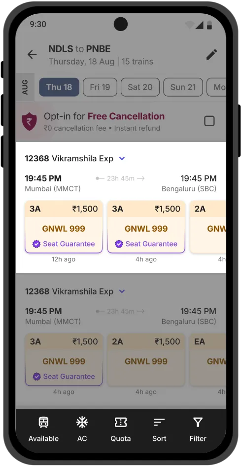
Once you have selected the train, you will need to add your IRCTC user ID. Since you are opting for an Indian railway booking ticket, you need an IRCTC account. If you do not have an IRCTC username, you can consider creating one.
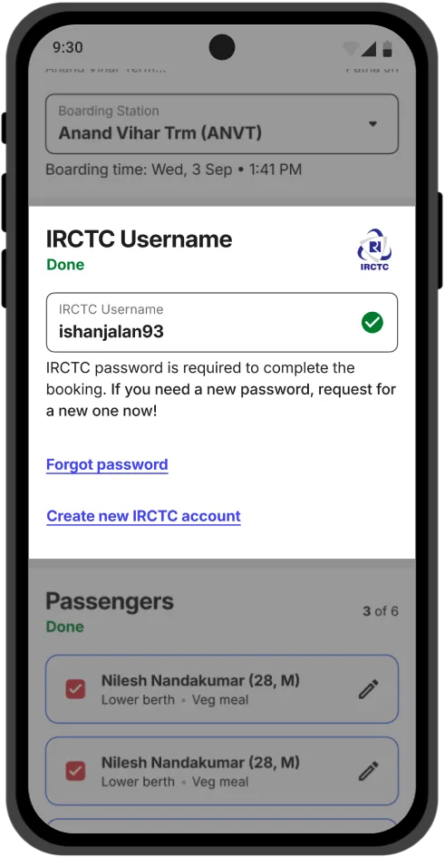
To complete your online railway ticket booking, you can then proceed to the payment. Choose from numerous payment options on redRail and complete payment to process your booking.
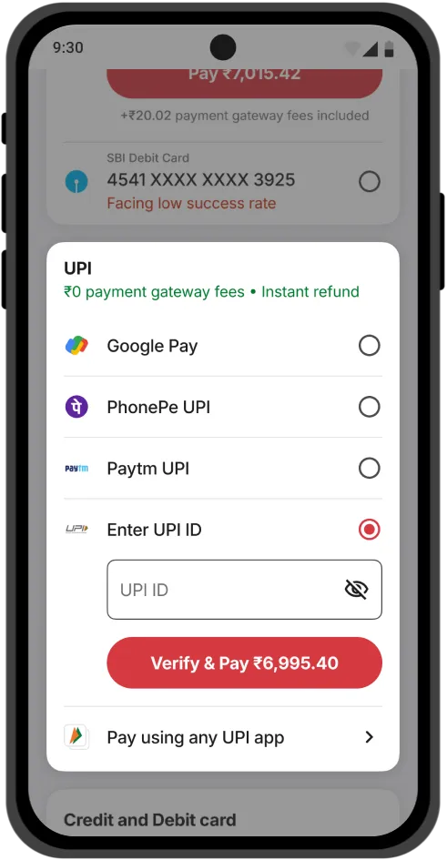
This is the final step in booking a train ticket from the redRail site. Enter your IRCTC password, and your booking will be processed instantly. You will receive the train tickets in your email or mobile number.
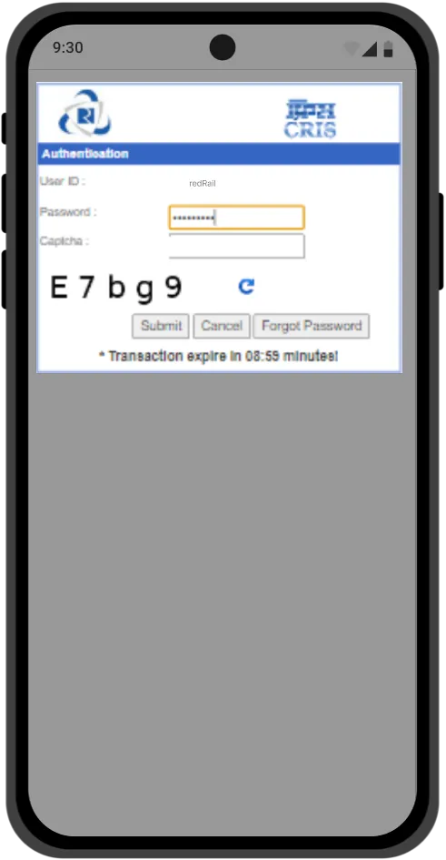
To experience a user-friendly and easy-to-use platform for train booking online, redRail offers a seamless train tickets booking experience for passengers. Take a look at the reasons why you should opt for redRail to book train tickets online.
The reason for choosing redRail for IRCTC train ticket booking is that it is the authorised partner of IRCTC. Therefore, all the information available on the platform is authentic. You can easily check PNR status, track live train running status, check seat availability and much more on redRail for a hassle-free train journey. Checking train tickets availability is an extremely convenient process on redRail.
Train tickets online booking through redRail, ensures easy cancellation of tickets if required. The cancellation policy details for the ticket are mentioned on the website, and you will get a refund for most bookings. redRail also provides instant refunds for IRCTC train ticket booking made through UPI payment modes.
Customer support for redRail is available 24/7 to help you with train bookings. Reach out to customer service for any issues related to online train ticket booking. The customer support staff will provide instant resolution for your problems and answer all your queries. You can quickly seek information on train ticket status and other train-related information.
Through redRail, you can access enticing discount offers and deals periodically designed to save your money on your train journeys. For example, if you are booking train tickets to Bangalore or any other city on redRail, you may waive service fees or additional payment gateway charges at the time of train bookings as part of the introductory booking incentives.
Besides booking train tickets, you may check PNR status easily and quickly on redRail's website or app. Checking train ticket status involves the following steps:
Step 1- Visit the redRail by redBus website or application.
Step 2- Select the PNR Status option.
Step 3- Enter a 10-digit PNR number and press the "Check Status" button.
Step 4- The PNR status will appear on the screen.
Review the information mentioned on PNR status to determine if your IRCTC rail ticket booking is on the waiting list or has been confirmed. Also, check for any updates about the train schedule, reservation details, or other relevant information.
You can check the Passenger Name Record (PNR) Number in the days before the departure date. The train ticket status on redRail will display all railway reservation-related information instantly.
The train ticket booking online timings may vary depending on the travel class and the type of ticket you want to book. Below is a table outlining the train ticket booking timings for the different travel classes and the different types of tickets.
| Train Ticket Type | Online Railway Ticket Booking Timings |
|---|---|
| General and non-Tatkal Tickets | 12.20 AM to 11.45 PM on all 7 days of the week including Sundays |
| Tatkal Tickets |
For AC travel classes – 10.00 AM to 11.00 AM on all 7 days of the week including Sundays. For non-AC travel classes – 11.00 AM to 12.00 PM on all 7 days of the week including Sundays |
If you’ve booked a train ticket online through the IRCTC
website or the redRail website or app, you can easily cancel your reservation quickly. Note that you can
cancel your e-ticket only until IRCTC chart preparation is over. Once the chart is
prepared, you cannot cancel your e-ticket. However, you’ll need to file a ticket
deposit receipt (TDR) online to seek a refund depending upon the eligibility criteria. IRCTC charts
are prepared on the previous night for trains departing until noon the next day.
If you’re travelling with your family or as a group, you have the option to cancel the train ticket booking
entirely or selectively cancel tickets for specific passengers. After the cancellation of train tickets, you
will receive a refund, subject to eligibility and with the deduction of cancellation charges. These
cancellation charges will vary depending on factors such as the travel class and the timing of the
cancellation request.
Cancelling train tickets online is easy and quick. If you want to cancel railway tickets online booked on redRail, here's what you need to do.
Below is the step-by-step tutorial on how to cancel a train ticket online.
How much of a refund you will get for cancelling train tickets? You'll receive a refund for your train ticket payment with the deduction of the corresponding IRCTC cancellation charges. If you pay via UPI on redRail, you might even get instant refunds for cancellations.
| Time Until Scheduled Departure | Train Ticket Cancellation Charges (Per Passenger) |
|---|---|
| More than 48 hours | AC First Class and Executive Class - Rs. 240 + GST. AC 2-Tier and First Class - Rs. 200 + GST. AC 3-Tier, AC Chair car, and AC 3-Tier Economy - Rs. 180 + GST. Sleeper Class - Rs. 120 + GST. Second Class - Rs. 60 + GST |
| Between 12 to 48 hours | 25% of the train ticket fare subject to the minimum amounts mentioned above + GST |
| Between 4 to 12 hours | 50% of the train ticket fare subject to the minimum amounts mentioned above + GST |
IRCTC (Indian Railway Catering and Tourism Corporation) is a subsidiary of the Indian Railways and is responsible for managing online train ticket booking, catering services, and tourism activities. IRCTC was established in 1999 to improve the passenger experience and provide modern and efficient services to Indian railway users.
IRCTC is the official website of the Indian Railways for online train ticket booking, which allows users to book train tickets, check seat availability, and access various other travel-related services.
Millions of users use the IRCTC ticket booking platform to book train tickets. If you haven’t registered with IRCTC, all you have to do is visit the official website, click on the register link, fill in the basic, personal and address information, and click on the register button. Once the registration is completed, you will get a pop-up message asking if the email and mobile number you entered are correct. Click on the ok button to complete the registration process.
Besides train booking, IRCTC next generation ticket booking platform manages other services such as catering, tourism, and online shopping. It operates a chain of food plazas and restaurants across various railway stations in India, providing quality food and beverages to railway passengers.
IRCTC has played a significant role in modernising the Indian Railways and improving the passenger experience by providing a range of services and facilities to millions of Indian railway users.
IRCTC has partnered with redBus to facilitate train ticket booking via redRail. To book train tickets, you must have an IRCTC account. If not, it is recommended that one be created. Note that the IRCTC registration is free and requires a mobile number and email ID to create the account. Check the stepwise process to create IRCTC login credentials.
Below are the stepwise instructions on how to create an IRCTC account.
Below are the different quotas for train ticket bookings in India.
It is important to note that availability and eligibility for these different types of bookings may vary depending on the train and route.
Tatkal train tickets are available under the Indian Railways Tatkal scheme, which is also available for
online railway booking. With this scheme, you can book train tickets online one day before the departure.
However, the Tatkal ticket prices are higher than those of the standard ones. The price hike can be 10-30%
from the base price, varying across different classes.
The windows for Tatkal train ticket booking is open a day before the departure from the originating station.
You must ensure that tickets are booked within the allotted Tatkal train ticket booking time to get
confirmed seats. Tatkal railway ticket booking can be challenging due to the limited availability of
tickets. You can book Tatkal train tickets for up to 4 passengers with a single in a single PNR.
There is no refund for the cancelled tickets. There will be a standard deduction of cancellation charges.
However, if you get a waiting list ticket, you can cancel the tickets subject to standard cancellation
charges.
Below is a step-by-step tutorial on booking a Tatkal train ticket.
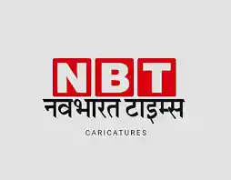

August 21, 2024
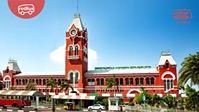
September 19, 2024

August 27, 2024
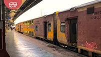
September 27, 2024
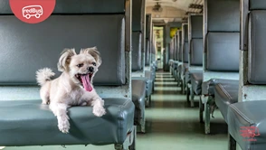
August 26, 2024
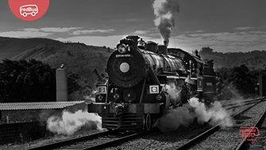
August 19, 2024